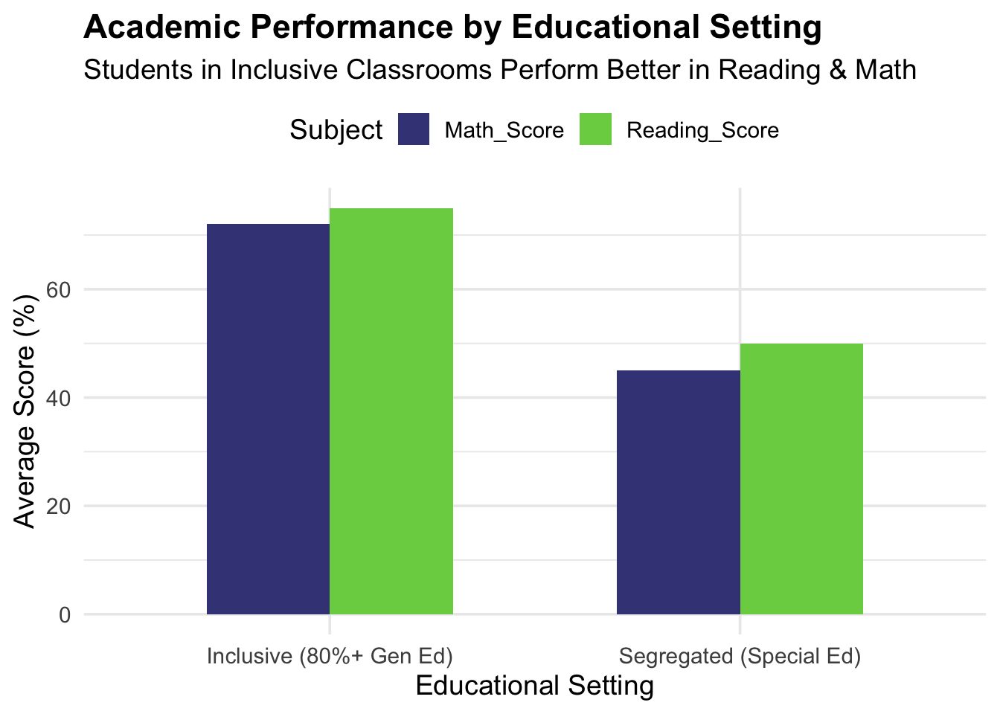
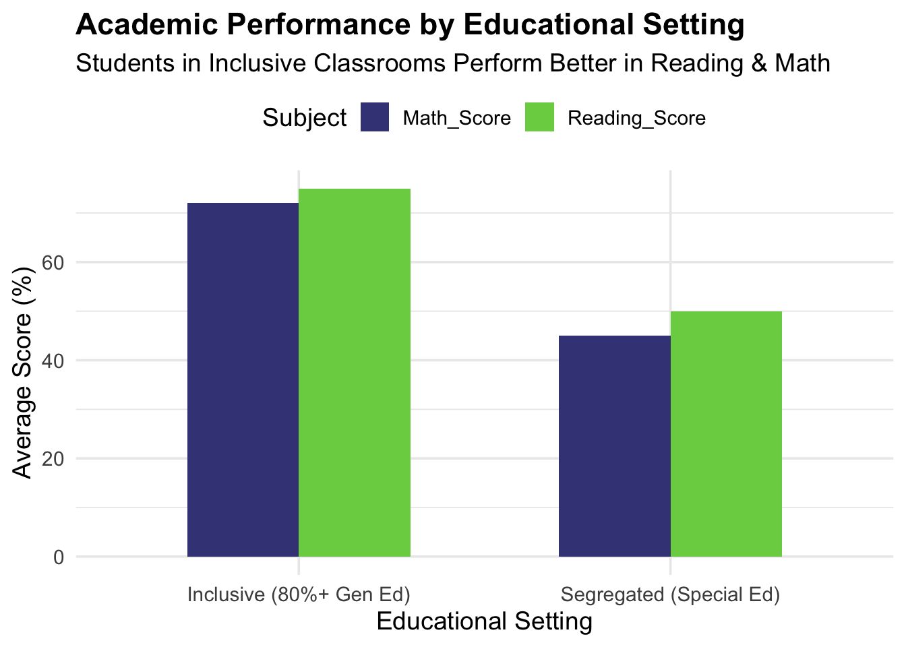

Loading required package: viridisLite
Saratessa Palos
March 18, 2025
The Individuals with Disabilities Education Act (IDEA) establishes the right of students with disabilities to receive education in the “least restrictive environment” (LRE), meaning they should be educated alongside their non-disabled peers to the maximum extent appropriate (Ballard & Dymond, 2017). This principle reflects a broader ethical commitment to educational equity and the recognition that all students deserve access to quality educational experiences.
Despite these mandates, significant disparities persist in how inclusion is implemented across American schools. Recent data from Cole et al. (2023) reveals concerning variations in special education placement and corresponding disparities in student outcomes. Their research demonstrates that students with disabilities who spent 80% or more of their time included in general education classrooms performed significantly better in reading and math than comparable peers who spent more time in segregated special education settings.
Loading required package: viridisLite
Additionally, students in more inclusive settings were more likely to earn college preparatory diplomas, suggesting better preparation for post-secondary opportunities. These findings highlight the substantial consequences of placement decisions on students’ educational trajectories.
However, a troubling gap exists between inclusive education policies and their implementation in practice. In a survey of high school staff perceptions, there was often broad agreement about the benefits of inclusion while significant barriers prevent its effective implementation (Carter & Hughes,2006). While educators across positions recognized the substantial benefits of inclusion for both students with disabilities and their general education peers, special educators and paraprofessionals identified more substantial barriers than general educators and administrators, including issues related to time for collaboration, lack of resources, and staff attitudes. Consequently, despite widespread acknowledgment of inclusion’s benefits, students with severe disabilities were enrolled in general education classes at remarkably low rates, with only 38% taking any general education courses.
This implementation gap is further compounded by geographic disparities. Brock and Schaefer (2015) demonstrated that a student’s location significantly impacts their educational placement, with urbanicity emerging as a key factor. Their analysis of Ohio data revealed that students in urban districts spent less time in general education classrooms compared to their rural peers, with those in large urban districts experiencing the most segregated placements. These findings suggest that concentrated advocacy targeting large urban districts could potentially create significant statewide impact in promoting more inclusive educational practices.
Crucially, inclusion efforts often falter because they lack strategic instructional support structures. As Ballard and Dymond (2017) found in their systematic literature review, stakeholders identified numerous challenges related to facilitating access to the general education curriculum in inclusive settings, including concerns about curriculum appropriateness, adaptation difficulties, and collaboration issues. Their research revealed that without adequate instructional frameworks, inclusion may deliver social benefits while falling short on academic outcomes for students with disabilities.
hlsn/lkcdnc Homogeneous Achievement Grouping (HAG) provides a structured and research-backed method for maximizing student achievement by organizing instruction based on skill level while maintaining flexibility for student progression. Unlike rigid tracking systems, which have been criticized for limiting student mobility, HAG emphasizes frequent reassessment, ensuring that students can move between groups based on demonstrated progress (Tieso, 2003).
Extensive research confirms the effectiveness of HAG in promoting academic success. Slavin (1987) found that within-class ability grouping for mathematics (median effect size = +.34) and cross-grade ability grouping for reading using the Joplin Plan (median effect size = +.45) both produced substantial positive impacts on student achievement. These findings highlight that reducing student heterogeneity in specific skill areas while adjusting instruction to students’ needs leads to meaningful academic gains.
Further supporting this approach, Gentry (1999) demonstrated that cluster grouping, a model in which high-achieving students are placed together in a classroom while distributing other achievement levels strategically, led to higher identification rates of advanced learners and fewer students labeled as low-achieving. Over time, students in this model surpassed their peers in traditionally structured classrooms, even when they initially started with lower achievement scores.
Additionally, research indicates that small, flexible group sizes enhance learning outcomes. Adelson and Carpenter (2011) found that achievement grouping led to greater reading growth for all kindergarteners, with even stronger effects in smaller groups. This supports the notion that precision grouping fosters optimal learning environments, allowing teachers to tailor instruction to student ability levels effectively.
When implemented thoughtfully, HAG mitigates achievement disparities while ensuring instructional effectiveness. By structuring learning environments to match student skill levels and allowing movement between groups based on progress, HAG represents a proven, evidence-based strategy for maximizing student achievement across all levels.
This paper addresses three central research questions that explore the intersection of homogeneous achievement grouping and inclusive education:
How can HAG serve as a driver for effective inclusive education that maximizes both academic and social outcomes?
What do state-level data from Oregon and Washington reveal about current challenges and practices?
What policy shifts are needed to ensure equitable, effective implementation of HAG within inclusive settings?
Together, these questions frame an integrative analysis of how homogeneous achievement grouping might serve as a pathway to meaningful inclusion that benefits all students.
This study employs an integrative review methodology to assess the role of HAG in fostering inclusive education. An integrative review is a structured approach that synthesizes both empirical and conceptual literature to provide a comprehensive understanding of a phenomenon (Whittemore & Knafl, 2005). This method is particularly valuable for defining complex educational concepts, reviewing theories and evidence, and analyzing methodological issues related to inclusion and ability grouping. While integrative reviews can present challenges related to synthesizing multiple study designs, they allow for a broader examination of theoretical and empirical perspectives (Grant & Booth, 2009). Despite these challenges, this approach provides a robust framework for evaluating existing research while contextualizing findings by integrating several forms of peer reviewed studies.
To ensure methodological rigor, elements of the PRISMA (Preferred Reporting Items for Systematic Reviews and Meta-Analyses) framework were adapted for this review. The literature search was conducted through academic databases, including PsycINFO, ERIC, Medline, and PubMed. The search strategy incorporated key terms related to HAG, inclusive education, student achievement, and public education policies. Studies were selected based on their relevance to inclusive education and ability grouping, empirical rigor, and applicability to policy and instructional practice. The review includes meta-analyses, qualitative studies, quantitative analyses, and conceptual papers that explore the implications of HAG in inclusive settings (Slavin, 1987; Lou et al., 1996; Cosier, Causton-Theoharis, & Theoharis, 2013). Studies that focused exclusively on postsecondary education or examined grouping based on non-academic factors were excluded. This approach ensures a comprehensive synthesis of research on how HAG can support inclusive education.
The data collection process adhered to structured procedures, ensuring all included studies were critically evaluated for their contributions to understanding HAG as an instructional tool. While a PRISMA flow diagram was not used due to the narrative nature of an integrative review, elements of the PRISMA checklist were applied, including clear documentation of sources, eligibility criteria, and synthesis methods (Page et al., 2021).
In addition to the literature review, a systematic document review of publicly available education data from Washington and Oregon was conducted. Reports from the Washington Office of Superintendent of Public Instruction (2024), Oregon’s state funding report (Khurana, 2025), and the U.S. Department of Education EDFacts Data Warehouse (2023) were analyzed to identify trends in student enrollment, special education placement, teacher qualifications, and funding allocations. These sources provide insights into the current state of inclusive education in the PNW and help contextualize findings from the literature review. As PRISMA-S emphasizes structured reporting of search strategies, this review explicitly documents state-level datasets and policy reports.
The PNW was selected as the focus of this review due to its high proportion of master’s-level educated teachers, uniquely positioning the region to implement evidence-based instructional strategies. The presence of a highly qualified teaching workforce may present an advantage in adopting research-backed approaches like HAG, making the region an ideal case study for hypothesizing potential improvements in inclusive education practices. By synthesizing empirical literature with regional education data, this review generates insights into how HAG could address inclusion gaps and inform policy adaptations. The methodological approach ensures transparency and replicability by aligning with established guidelines for integrative reviews. This study does not involve primary data collection but relies entirely on previously published research and publicly available education reports.
Inclusion Improves Outcomes but Faces Barriers
Research consistently demonstrates that inclusive education improves both academic and social outcomes for students with disabilities. Meta-analyses confirm that students in inclusive settings achieve higher academically and experience better social integration than those in segregated special education classrooms (Baker, Wang, & Walberg, 1994; Cosier et al., 2013). However, significant barriers persist in implementing inclusion effectively. Teacher preparedness, curriculum adaptation, and structural constraints continue to limit the success of inclusive education (Ballard & Dymond, 2017). Research highlights that while inclusion is widely accepted in principle, practical implementation remains inconsistent due to inadequate resources, lack of professional development, and varying teacher attitudes (Carter & Hughes, 2006).
HAG can Enhance Inclusion If Applied Strategically
HAG has the potential to support inclusive education when implemented with flexibility and frequent reassessment. Within-class ability grouping has been found to enhance student outcomes in math and reading, particularly when instruction is tailored to student needs (Slavin, 1987; Lou et al., 1996). However, concerns about rigid tracking persist, as it has been shown to exacerbate educational inequities by limiting opportunities for lower-achieving students (Oakes, 1992, 2008). To mitigate these risks, research supports the implementation of skill-based grouping models with regular reassessment to ensure mobility between groups and prevent long-term stratification (Adelson & Carpenter, 2011).
Geographic and Structural Disparities in Inclusion
Geographic location significantly influences inclusive education practices. Students in urban districts are more likely to experience segregated placements compared to their rural counterparts, with large urban districts showing the lowest rates of inclusion (Brock & Schaefer, 2015). The application of HAG could serve as an intervention strategy to address disparities in student achievement by providing differentiated instruction within inclusive classrooms, rather than separating students based on perceived ability.
Findings from Pacific Northwest Data
Analysis of publicly available education data from Oregon and Washington highlights several structural challenges in achieving inclusive education. Washington reports a per-pupil expenditure of $18,649, with 50.3% of students demonstrating grade-level proficiency in ELA and 39.7% in math (Washington Office of Superintendent of Public Instruction, 2024). In Oregon, students with disabilities account for 15% of total enrollment, a group that receives additional funding weights in the state funding formula (Khurana, 2025). However, disparities persist, particularly in urban districts where students with disabilities are placed in more restrictive settings at higher rates. The number of students eligible for the High-Cost Disability Fund has doubled since 2003, indicating rising special education expenditures that outpace state reimbursement (Khurana, 2025). The availability of fully certified special education teachers also varies, with Oregon employing 3,492.84 special educators, 499.30 of whom are not fully certified, while Washington employs 6,943.84 special educators, with 205.75 not fully certified (U.S. Department of Education, 2023). These discrepancies suggest that teacher shortages and funding limitations may contribute to the uneven implementation of inclusion policies.
Research findings
How can HAG serve as a driver for effective inclusive education that maximizes both academic and social outcomes? Research indicates that HAG, when applied with flexibility and frequent reassessment, can enhance differentiated instruction without reinforcing segregation. Strategic implementation allows educators to meet diverse learning needs within inclusive classrooms, supporting both academic growth and social integration (Slavin, 1987; Gentry, 1999).
What do state-level data from Oregon and Washington reveal about current challenges and practices? The data suggest that funding structures and teacher shortages present significant barriers to inclusive education in the Pacific Northwest. Urban districts exhibit lower inclusion rates, and the demand for special education services has increased, outpacing available resources (Khurana, 2025; U.S. Department of Education, 2023).
What policy shifts are needed to ensure equitable, effective implementation of HAG within inclusive settings? Policies should focus on increasing funding allocations for inclusive education, addressing teacher shortages through targeted recruitment and professional development, and ensuring HAG practices are designed to be flexible and responsive to student progress. Implementing HAG with regular reassessment and professional training for educators can optimize its benefits for inclusion while avoiding the pitfalls of rigid tracking (Adelson & Carpenter, 2011; Oakes, 1992).
HAG presents a promising strategy for enhancing inclusive education when implemented thoughtfully. However, achieving meaningful inclusion requires addressing systemic barriers related to funding, teacher preparation, and structural disparities in educational placement. The findings underscore the need for evidence-based policy adaptations to ensure that all students, regardless of ability level, receive equitable opportunities for academic and social success.
Implications and Policy Recommendations
Reframing HAG as a Tool for Inclusive Education
To fully realize the benefits of homogeneous achievement grouping (HAG) in inclusive education, it is essential to reject rigid tracking models in favor of adaptive, flexible grouping structures. Research consistently highlights that rigid tracking exacerbates educational inequities by limiting mobility and reinforcing disparities in student achievement (Oakes, 1992, 2008). Instead, HAG should be embedded within existing inclusion frameworks, ensuring that student placement remains dynamic and responsive to individual progress. Studies indicate that when grouping structures allow for frequent reassessment and movement based on skill development, students across all ability levels benefit academically and socially (Slavin, 1987). Implementing HAG in a way that enhances, rather than restricts, student access to general education settings will maximize its effectiveness as an inclusion-supporting strategy.
Investing in Teacher Training and Support
A critical factor in the successful implementation of HAG within inclusive classrooms is teacher training and professional development. Educators need structured guidance on differentiated instruction, flexible grouping, and adaptive teaching strategies to ensure HAG benefits all students. Research underscores the importance of professional development in equipping teachers with the skills necessary to implement evidence-based grouping practices effectively (Hall, 2002). Additionally, fostering teacher collaboration models can enhance instructional quality and increase teacher confidence in using HAG strategies to support diverse learners (Hunt et al., 2003; Bouillet, 2013). Professional learning communities and co-teaching frameworks can provide ongoing peer support, ensuring that teachers have the resources to apply HAG effectively within inclusive settings.
Enhancing Data Transparency and Accountability
To ensure that HAG is applied equitably and effectively, school districts must adopt data transparency and accountability measures. Districts should be required to track and report HAG implementation practices, student mobility between groups, and performance outcomes. Regular reporting will allow policymakers and educators to monitor whether HAG supports student growth without reinforcing tracking-based segregation. Additionally, performance-based movement between groups should be prioritized, allowing students to transition fluidly based on progress rather than static labels (Adelson & Carpenter, 2011). Ensuring that grouping practices are data-driven and student-centered will help maintain the integrity of HAG as a tool for inclusion rather than a mechanism for stratification.
Policy Action Steps for Oregon and Washington
To effectively integrate HAG into inclusive education programs, state-level policy initiatives are necessary. First, Oregon and Washington should mandate the adoption of flexible, research-based HAG models within inclusion programs to ensure that grouping practices remain adaptive and do not reinforce existing achievement gaps. Second, targeted funding should be allocated for teacher training on HAG and differentiated instruction to equip educators with the necessary skills to implement these models effectively. Finally, states should incentive pilot programs that integrate HAG within inclusive classrooms, allowing districts to test and refine best practices before scaling implementation statewide. Investing in these initiatives will help ensure that HAG is used strategically to enhance, rather than hinder, inclusive education, ultimately promoting equitable access to quality learning experiences for all students.
References
Abadzi, H. (1985). Ability grouping effects on academic achievement and self-esteem: Who performs in the long run as expected. The Journal of Educational Research, 79(1), 36-40.
Adelson, J. L., & Carpenter, B. D. (2011). Grouping for achievement gains: For whom does achievement grouping increase kindergarten reading growth? Gifted Child Quarterly, 55(4), 265-278. https://doi.org/10.1177/0016986211417306
Ansalone, G. (2006). Tracking: A return to Jim Crow. Race, Gender & Class, 13(1/2), 144-153.
Ansalone, G., & Biafora, F. A. (2010). Tracking in the schools: Perceptions and attitudes of parents. Race, Gender & Class, 17(1/2), 226-240.
Baker, E. T., Wang, M. C., & Walberg, H. J. (1994). The effects of inclusion on learning. Educational Leadership, 52(4), 33-35.
Ballard, S. L., & Dymond, S. K. (2017). Addressing the general education curriculum in general education settings with students with severe disabilities. Research and Practice for Persons with Severe Disabilities, 42(3), 155-170. https://doi.org/10.1177/1540796917698832
Bouillet, D. (2013). Some aspects of collaboration in inclusive education — teachers’ experiences. Center for Educational Policy Studies Journal, 3(2), 93-117.
Brock, M. E., & Schaefer, J. M. (2015). Location matters: Geographic location and educational placement of students with developmental disabilities. Research and Practice for Persons with Severe Disabilities, 40(2), 154-164. https://doi.org/10.1177/1540796915591988
Buckley, S., Bird, G., Sacks, B., & Archer, T. (2006). A comparison of mainstream and special education for teenagers with Down syndrome: Implications for parents and teachers. Down Syndrome Research and Practice, 9(3), 54-67. https://doi.org/10.3104/reports.295
Bunch, G., & Valeo, A. (2004). Student attitudes toward peers with disabilities in inclusive and special education schools. Disability & Society, 19(1), 61-76. https://doi.org/10.1080/0968759032000155640
Carter, E. W., & Hughes, C. (2006). Including high school students with severe disabilities in general education classes: Perspectives of general and special educators, paraprofessionals, and administrators. Research & Practice for Persons with Severe Disabilities, 31(2), 174-185. https://doi.org/10.1177/154079690603100209
Carter, E. W., Asmus, J., Moss, C. K., Biggs, E. E., Bolt, D. M., Born, T. L., Brock, M. E., Cattey, G. N., Chen, R., Cooney, M., Fesperman, E., Hochman, J. M., Huber, H. B., Lequia, J. L., Lyons, G., Moyseenko, K. A., Riesch, L. M., Shalev, R. A., Vincent, L. B., & Weir, K. (2016). Randomized evaluation of peer support arrangements to support the inclusion of high school students with severe disabilities. Exceptional Children, 82(2), 209-233. https://doi.org/10.1177/0014402915598780
Cheung, C.-K., & Rudowicz, E. (2003). Academic outcomes of ability grouping among junior high school students in Hong Kong. The Journal of Educational Research, 96(4), 241-254. https://doi.org/10.1080/00220670309598813
Cole, S. M., Murphy, H. R., Frisby, M. B., & Robinson, J. (2023). The relationship between special education placement and high school outcomes. The Journal of Special Education, 57(1), 13-23. https://doi.org/10.1177/00224669221097945
Condron, D. J. (2007). Stratification and educational sorting: Explaining ascriptive inequalities in early childhood reading group placement. Social Problems, 54(1), 139-160. https://doi.org/10.1525/sp.2007.54.1.139
Cosier, M., Causton-Theoharis, J., & Theoharis, G. (2013). Does access matter? Time in general education and achievement for students with disabilities. Remedial and Special Education, 34(3), 1-10. https://doi.org/10.1177/0741932513485448
Daneshamooz, S., & Alamolhodaei, H. (2012). Cooperative learning and academic hardiness on students’ mathematical performance with different levels of mathematics anxiety. Educational Research, 3(3), 270-276.
Du Plooy, L. L. (2019). The manifestations of the practice of within-class homogeneous ability grouping. South African Journal of Childhood Education, 9(1), a690. https://doi.org/10.4102/sajce.v9i1.690
Gentry, M. L. (1999). Promoting student achievement and exemplary classroom practices through cluster grouping: A research-based alternative to heterogeneous elementary classrooms. The National Research Center on the Gifted and Talented, University of Connecticut.
Gillies, R. M. (2002). The residual effects of cooperative-learning experiences: A two-year follow-up. The Journal of Educational Research, 96(1), 15-20.
Hall, T. (2002). Differentiated instruction: Effective classroom practices report. National Center on Accessing the General Curriculum (NCAC).
Hallam, S., & Ireson, J. (2007). Secondary school pupils’ satisfaction with their ability grouping placements. British Educational Research Journal, 33(1), 1-38.
Hunt, P., Soto, G., Maier, J., & Doering, K. (2003). Collaborative teaming to support students at risk and students with severe disabilities in general education classrooms. Exceptional Children, 69(3), 315-332.
Khurana, H. (2025, March 11). An overview of Oregon’s state funding allocation – Data science capstone. Retrieved from https://havishak.github.io/sped-oregon-finance/district_adm_plots.html
Kulik, J. A., & Kulik, C.-L. C. (1992). Meta-analytic findings on grouping programs. Gifted Child Quarterly, 36(2), 73-77.
Oakes, J. (1992). Can tracking research inform practice? Technical, normative, and political considerations. Educational Researcher, 21(4), 12-21.
Oakes, J. (2008). Keeping track: Structuring equality and inequality in an era of accountability. Teachers College Record, 110(3), 700-712.
Slavin, R. E. (1987). Ability grouping and student achievement in elementary schools: A best-evidence synthesis. Review of Educational Research, 57(3), 293-336. https://www.jstor.org/stable/1170460
Washington Office of Superintendent of Public Instruction. (2024). Washington school report card data 2023-24. Retrieved from https://reportcard.ospi.k12.wa.us